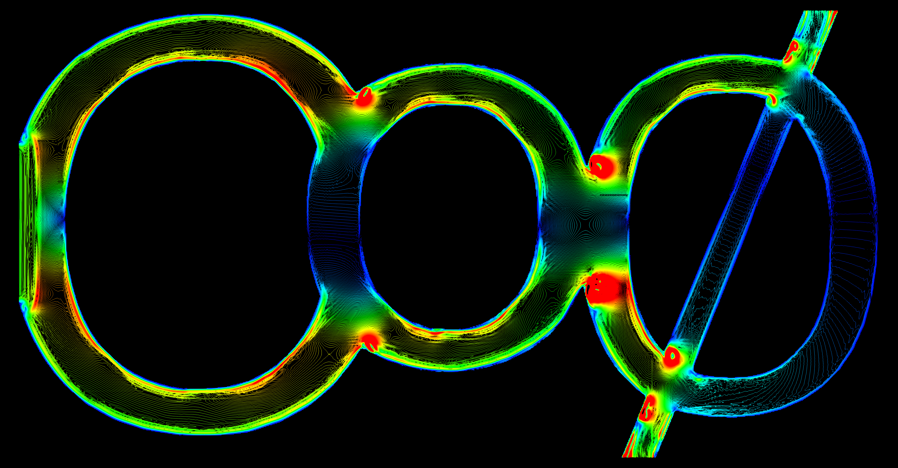
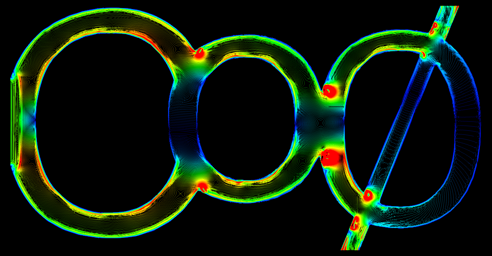

Kartik Jain, Assistant Professor of Biofluid Dynamics,
Department of Thermal and Fluid Engineering,
University of Twente,
The Netherlands
E-mail: k.jain@utwente.nl
Computational Phy(∅)siology research group at the University of Twente is embedded within the Engineering Fluid Dynamics (EFD) chair. The Co∅ group develops computational models of various physiologic problems, in particular various types of physiologic flows.
The group is led by Kartik Jain, an Assistant Professor of Biofluid Dynamics at the Engineering Fluid Dynamics group of the University of Twente. Kartik obtained a Doctoral degree in Mechanical Engineering (Dr.-Ing.) with a distinction (summa cum laude) from the University of Siegen in Germany, prior to which he acquired his masters in Mechanical Engineering with a specialisation in Simulation Sciences from the RWTH Aachen University, Germany. His doctoral dissertation explored and characterized transition to turbulence in biofluid applications like blood flow in intracranial aneurysms and cerebrospinal fluid flow in the spinal canal. Before moving to Europe, he acquired a Bachelor degree in Control Engineering from Kurukshetra University, India and then worked as a software developer in a leading IT company.
After completion of his PhD he spent two years as a Postdoc at the Institute of Physiology of the University of Zürich, Switzerland, where his research focused on computational modeling of renal hemodynamics and renal hypoxia within the Swiss national center of competence in research NCCR Kidney.CH. He thereafter returned to Germany to work as a senior scientist at the Institute for Computational Physics of the University of Stuttgart with Prof. Christian Holm. There his research focused on modeling of bacterial dynamics and biofilm lifecycle in confined geometries within the DFG collaborative research center SFB1313.